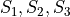
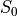
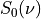
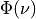
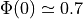
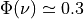

Spectral analysis of bivariate signals: tutorial
This tutorial aims at demonstrating different tools available within the
spectral module of BiSPy. The examples provided here come along
with the paper
Julien Flamant, Nicolas Le Bihan, Pierre Chainais: “Spectral analysis of stationary random bivariate signals”, IEEE Transactions on Signal Processing, 2017; arXiv:1703.06417, doi:10.1109/TSP.2017.2736494
The paper contains theoretical results and several applications that can be reproduced with the following tutorial. A completementary notebook version is available here.
Load bispy and necessary modules
import numpy as np
import matplotlib.pyplot as plt
import quaternion # load the quaternion module
import bispy as bsp
Synthetic examples
The following examples are presented in the aforementioned paper. The
module bispy.signals gives useful functions to generate the synthetic
signals presented.
Example 1: Bivariate white noise only
First let us define the constants defining the polarization properties of the bivariate white gaussian noise.
N = 1024 # length of the signal
S0 = 1 # power of the bivariate WGN
P0 = .5 # degree of polarization
theta0 = np.pi/4 # angle of linear polarization
t = np.arange(0, N) # time vector
First simulate a realization of this bivariate WGN:
w = bsp.signals.bivariatewhiteNoise(N, S0, P=P0, theta=theta0)
Now, display this signal
fig, ax = bsp.utils.visual.plot2D(t, w)

The goal is now to compare 2 spectral density estimation methods:
an averaged polarization periodogram
an averaged multitaper estimate using Slepian tapers.
To do so, we simulate M independent realization of this bivariate
WGN, and average across realizations each method output.
M = 10 # number of independent realization of the WGN
The periodogram and multitaper estimates are computed like:
w = bsp.signals.bivariatewhiteNoise(N, S0, P=P0, theta=theta0)
# compute spectral estimates
per = bsp.spectral.Periodogram(t, w)
multi = bsp.spectral.Multitaper(t, w)
# loop accros realizations
for k in range(1, M):
w = bsp.signals.bivariatewhiteNoise(N, S0, P=P0, theta=theta0)
per2 = bsp.spectral.Periodogram(t, w)
multi2 = bsp.spectral.Multitaper(t, w)
per = per + per2
multi = multi + multi2
# normalize by M
per = 1./M * per
multi = 1./M * multi
By default, the Multitaper class assumes a bandwidth bw of 2.5
frequency samples, giving 4 Slepian tapers.
The next step is to normalize the Stokes parameters  by the intensity Stokes parameter 
per.normalize()
multi.normalize()
We can now display the results for both methods
fig, axes = per.plot()

fig, ax = multi.plot()

Both estimates permit to recover the main features of the bivariate WGN: power, degree of polarization and polarization state are recovered.
Then the usual discussion between periodogram and multitaper estimates apply: the multitaper estimate exhibits reduced leakage bias and less variance than the periodogram estimate.
Example 2: bivariate monochromatic signal in white noise
We proceed similarly. First define the different parameters:
N = 1024 # length of the signal
t = np.arange(0, N) # time vector
dt = (t[1]-t[0])
# bivariate monochromatic signal parameters
a = 1/np.sqrt(N*dt) # amplitude = 1
theta = -np.pi/3 # polarization angle
chi = np.pi/8 # ellipticity parameter
f0 = 128/N/dt # frequency
# bivariate WGN noise paramerters
S0_w = 10**(-2) # power of the bivariate WGN
Phi_w = .2 # degree of polarization
theta_w = np.pi/8 # angle of linear polarization
Now, simulate a bivariate monochromatic signal (note the use of the
argument complexOutput which provides a complex output (useful for
plots), rather than a quaternion-valued output (useful for computations)
x = bsp.signals.bivariateAMFM(a, theta, chi, 2*np.pi*f0*t)
Let us have a look at the bivariate signal itself
fig, ax = bsp.utils.visual.plot2D(t, x)

Again, we compare 2 spectral density estimation methods:
an averaged polarization periodogram
an averaged multitaper estimate using Slepian tapers.
To do so, we simulate M independent realization of this bivariate
WGN, and average across realizations each method output.
M = 20 # number of realizations
y = np.zeros((N, M), dtype='quaternion')
# generate the data
for k in range(M):
phi = 2*np.pi*np.random.rand() # random initial phase term
x = bsp.signals.bivariateAMFM(a, theta, chi, 2*np.pi*f0*t+phi) # bivariate monochromatic signal
w = bsp.signals.bivariatewhiteNoise(N, S0_w, Phi_w, theta_w) # bivariate WGN
y[:, k] = x + w
# compute spectral estimates
per = bsp.spectral.Periodogram(t, y[:, 0])
multi = bsp.spectral.Multitaper(t, y[:, 0], bw=3)
for k in range(1, M):
per2 = bsp.spectral.Periodogram(t, y[:, k])
multi2 = bsp.spectral.Multitaper(t, y[:, k], bw=3)
per = per + per2
multi = multi + multi2
per = 1./M * per
multi = 1/M * multi
Here the multitaper class is computed with a bandwidth bw = 3
frequency samples, giving 5 Slepian tapers.
The next step is to normalize the Stokes parameters by the intensity Stokes parameter
per.normalize()
multi.normalize()
We can now display the results for both methods
fig, ax = per.plot()

fig, ax = multi.plot()

A real case example: spectral analysis of wind measurements
We turn to a real-life example to illustrate the general relevance of the method.
We consider a dataset of instantaneous wind measurements (east and northward velocities). The dataset is available for download at http://www.commsp.ee.ic.ac.uk/~mandic/research/WL_Complex_Stuff.htm. This dataset has been used by the authors in several publications, e.g. in
S. L. Goh, M. Chen, D. H. Popovic, K. Aihara, D. Obradovic and D. P. Mandic, "Complex-Valued Forecasting of Wind Profile," Renewable Energy, vol. 31, pp. 1733-1750, 2006.
Quoting the included Readme: >- Wind data for ‘low’, ‘medium’ and ‘high’ dynamics regions. - Data are recorded using the Gill Instruments WindMaster, the 2D ultrasonic anemometer - Wind was sampled at 32 Hz and resampled at 50Hz, and the two channels correspond to the the “north” and “east” direction - To make a complex-valued wind signal, combine z=v_n + j v_e, where ‘v’ is wind speed and ‘n’ and ‘e’ the north and east directions - Data length = 5000 samples
Setting 1: low-wind
We start by loading the data
import scipy.io as scio
windData = scio.loadmat('datasets/wind/low-wind.mat')
u = windData['v_east'][:,0]
v = windData['v_north'][:, 0]
N = np.size(u) # should be 5000
dt = 1./50
Estimating polarization features in bivariate signals requires ideally
multiple measurements/realizations. We will fake this out using an
ergodic hypothesis. This thus split the signal into Nw subsignals,
and compute for each a spectral estimate. By averaging out spectral
estimates, one obtains a estimate of the spectral density of the
underlying process. (Welch method with no overlap)
Let’s define a handy function:
def subsignal(u, v, Nx, k):
'''subsamples u, v components and returns the associated quaternion signal'''
uk = u[k*Nx:(k+1)*Nx]
vk = v[k*Nx:(k+1)*Nx]
# to make it zero-mean
uk = uk - np.mean(uk)
vk = vk - np.mean(vk)
return bsp.utils.sympSynth(uk, vk)
Then we compute the averaged multitaper estimate
# subsampling parameters
Nw = 20 # number of subsamples
Nx = N // Nw # length of one subsampled signal
# time index for subsampled signals
tx = np.arange(Nx)*dt
xk = subsignal(u, v, Nx, 0)
multi = bsp.spectral.Multitaper(tx, xk)
# loop across subsamples
for k in range(1, Nw):
xk = subsignal(u, v, Nx, k)
multi2 = bsp.spectral.Multitaper(tx, xk)
multi = multi + multi2
# normalize and plot multitaper estimate
multi.normalize()
fig, ax = multi.plot()

The total power spectrum  exhibits a power-law like shape.
Looking at the degree of polarization , we see that the signal is almost unpolarized at all frequencies, except for frequencies below 0.5 Hz, where we notice a small increase in the degree of polarization.
Setting 2: moderate wind
We follow the same procedure as above.
# load data
windData = scio.loadmat('datasets/wind/medium-wind.mat')
u = windData['v_east'][:,0]
v = windData['v_north'][:, 0]
N = np.size(u)
# we use an ergodic argument and split the signal into "sub-signals"
Nw = 20
Nx = N // Nw
tx = np.arange(Nx)*dt
xk = subsignal(u, v, Nx, 0)
# compute spectral estimate
multi = bsp.spectral.Multitaper(tx, xk)
for k in range(1, Nw):
xk = subsignal(u, v, Nx, k)
multi2 = bsp.spectral.Multitaper(tx, xk)
multi = multi + multi2
# normalize and plot multitaper estimate
multi.normalize()
fig, ax = multi.plot()

We observe again power law - like shape in the total power . The degree of polarization is close to zero for frequencies above 1 Hz; There is again a small “step” for frequencies below 1 Hz.
Setting 3: high-wind
Again, same procedure.
# load data
windData = scio.loadmat('datasets/wind/high-wind.mat')
u = windData['v_east'][:,0]
v = windData['v_north'][:, 0]
N = np.size(u)
# we use an ergodic argument and split the signal into "sub-signals"
Nw = 20
Nx = N // Nw
tx = np.arange(Nx)
xk = subsignal(u, v, Nx, 0)
# compute spectral estimate
multi = bsp.spectral.Multitaper(tx, xk)
for k in range(1, Nw):
xk = subsignal(u, v, Nx, k)
multi2 = bsp.spectral.Multitaper(tx, xk)
multi = multi + multi2
# normalize and plot multitaper estimate
multi.normalize()
fig, ax = multi.plot()

Again exhibits a power law shape. The degree of polarization is overall higher than in the low and moderate wind settings. The signal is strongly polarized () at low frequencies. High frequencies show a relatively constant degree of polarization, around 